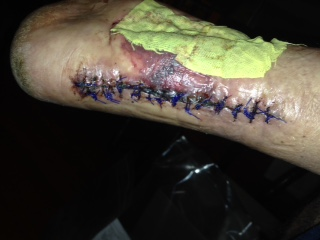
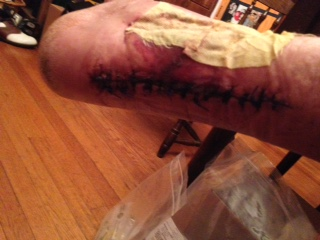
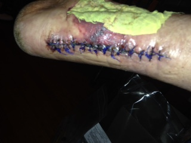
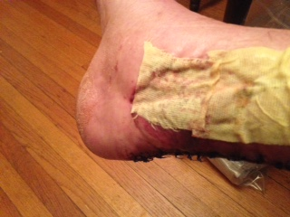
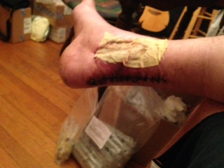
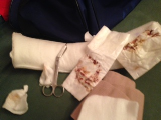

Hoooooo.... Franken foot..... Hello!!

Take it over this one though....

Looks like a worm from a Del Toro movie

Argh... these versions w the flash are gruesome! Diggin my blue stitches though. Lets Go Mets!
Argh... these versions w the flash are gruesome! Diggin my blue stitches though. Lets Go Mets!

Holy Bob Villa dove tail joint Batman. Seems they made that cut and did the reversal there so there was enough slack to pull the wound closed. Then, when that was done, they did the graft with the sizzlean they cut out of my thigh. Nifty.

I have NOTHING to replace the yellow surgical tape with so that guy is staying until I can get to the surgeon for a real dressing change and not just this makeshift shit I'm doing. I got it cleaned up, let it air out for 15 minutes. Felt fine, no pain or anything, just sore.

This is my dining room circa 6:30pm... Blech... Thanks JFK... Feel better though. Got those shitty bandages off, cleaned it up and covered it with clean guaze. I will go to Walgreens or Rite Aid tomorrow and get all the supplies I need to do it right on Friday. DIY!! Hack your Own Leg!!
I did need an assist to dress the wound completely though...
---